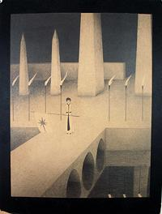
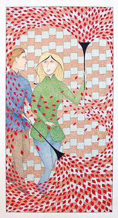

Jon ridiculed me often, especially for total lack of artistic sensitivity or ability. When he saw the concrete sail boat I was building, I heard him say to others, in a disdainful tone, "How could he build something with such beautiful curves". Finally, though, the situation turned, and Jon could take my presence no longer. He banished me from Chesley Donavan Foundation meetings, which he jealously controlled.
In those days, the Chesley Donavan Foundation meetings were held every Friday evening at Jon's digs. I had been a member since about 1960, when meetings were still in Helen Urban's garage. I attended almost every meeting. There were usually around 8 people there.
As for my artistic abilities, in my childhood, I drew pictures now and then. They were not particularly talented and none have survived to the current day, which is no loss. When I was about 30, I made the first drawing of my adult life. it was simple, of a primitive nature, in pencil, with a fantastical subject.
 I showed this picture to Ron Cob, one of the founders of the Chesley Donavan Foundation, but who had not attended meetings since his return from the Vietnam war. I met him through friends. By this time he was a successful political cartoonist for the Free Press, and a rising talent in graphic arts and design. He encouraged me to do more artwork.
I went out and bought a set of colored pencils for my next drawing, totally different from the first, but still on a fantastical theme, In fact, for the entirety of my short artistic period, I did nothing but fantastical themes. For my third drawing, and beyond, I moved to Pelican colored inks.
Also among the regular CD meeting attendees was David Cuthbertson,
art director for a greeting card company. Jon was persistent in trying
to sell art to David, but David was not buying. Certainly not for
greeting cards, the style of the time was totally different from
anything Jon had ever produced, but he was not buying for his private
collection either.
 Neither Jon nor any other person attending the CD events had seen any of my drawings. I took one, I think it was my 4th finished drawing, to a meeting, just to show around. It was in a style and theme similar to the drawing shown here on the left. It was passed from hand to hand, until it got to David Cuthbertson. He pulled out his checkbook and wrote a check for it, at a decent price for a small work by a totally unknown artist.
This was just way more than Jon's ego could take. The person whom he had so often ridiculed for lack of artistic sensitivity showed up with a drawing and sold it to an art director who would not buy any of his, in his home. When I showed up for the next meeting, Jon rushed to the door, physically turned me around and shoved me out, telling me to never come there again.
Well, I had a whole lot of other things that I was doing, so this bothered me only moderately, and soon faded way into the background. This banishment lasted about 30 years. I was called back a couple of weeks after Jon's death, by people who were not members at the time I was banished.
The CD meetings had become the "Music Group" meetings, held once a month. These meetings were no longer at Jon's place because his electricity was usually turned off for non-payment, so playing recorded music, especially at the volume he liked, was out of the question.
When Tom and Peggy were in town from their travels around the world, they sometimes invited me along to Music Group events. I was very cordial to Jon, but he was all "Haruuuumph!" - but he couldn't shove me out of other people's homes.